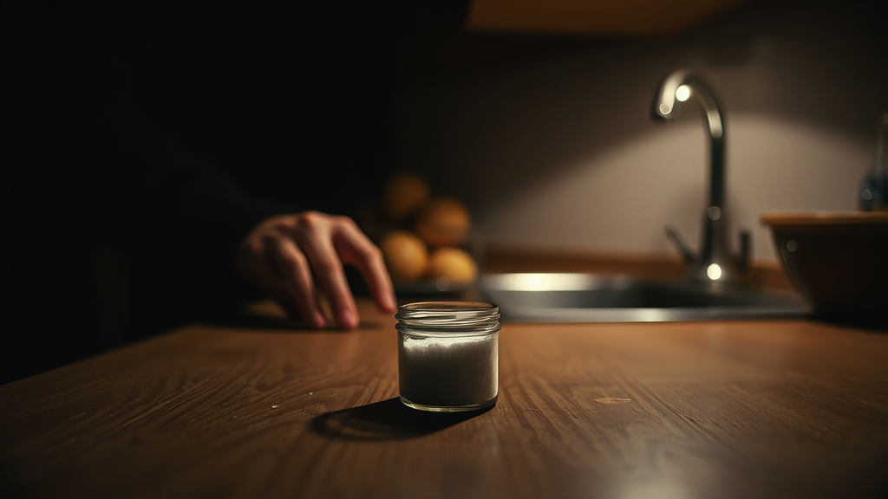
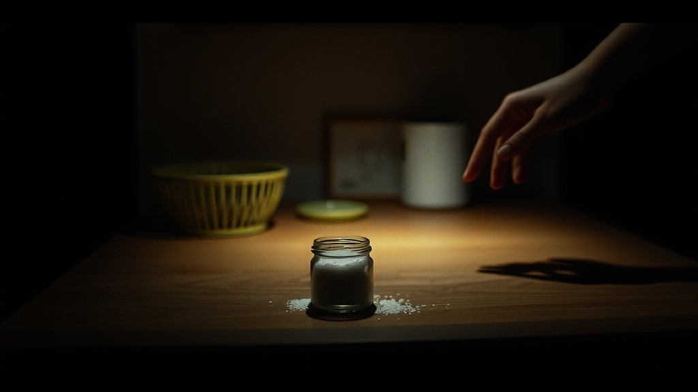
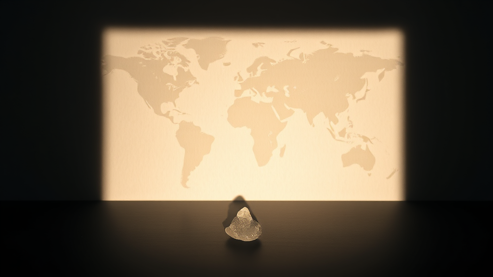
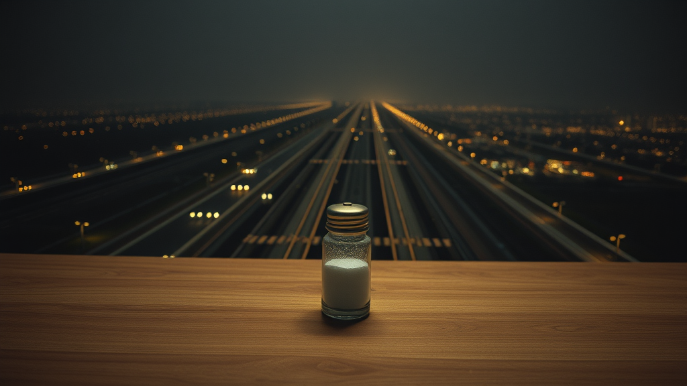
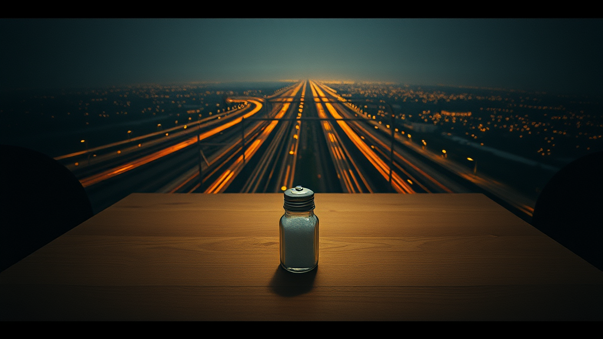
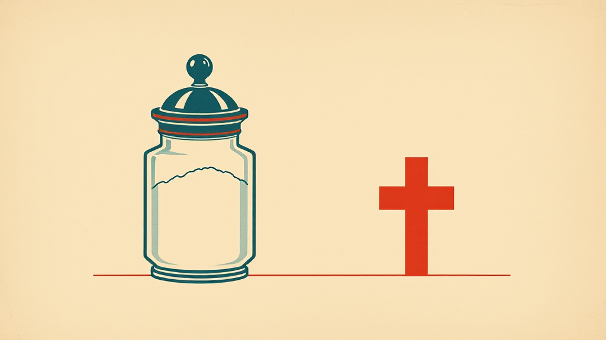
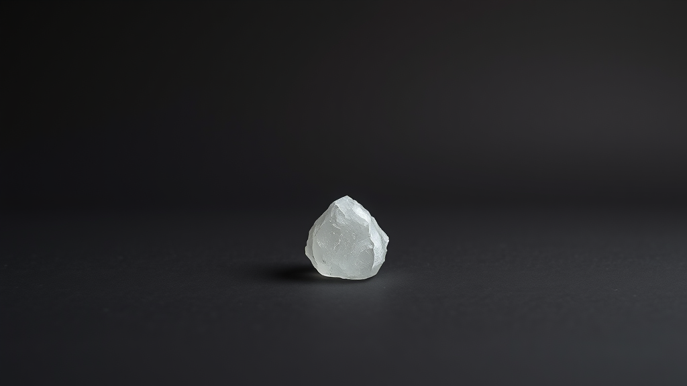
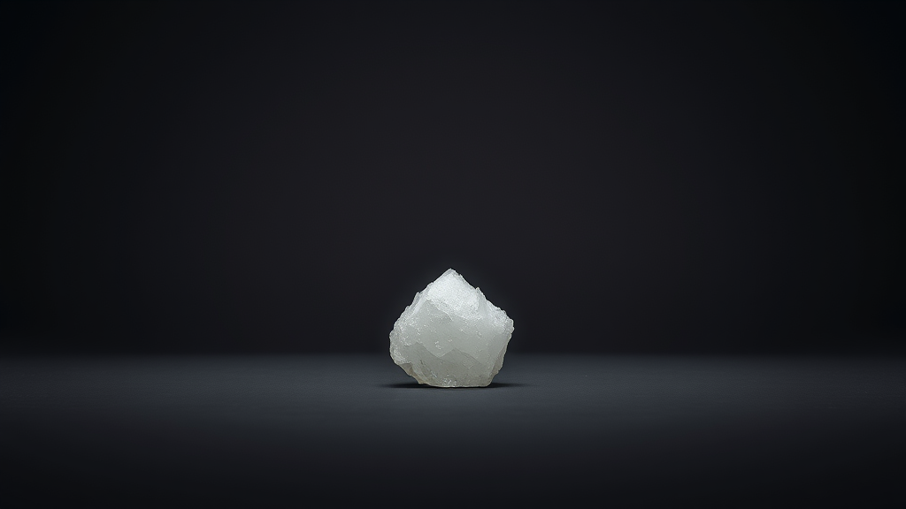
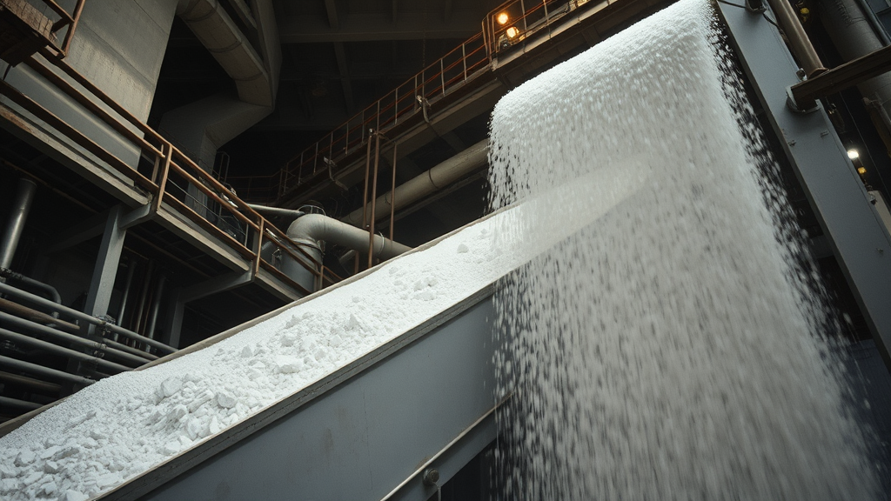
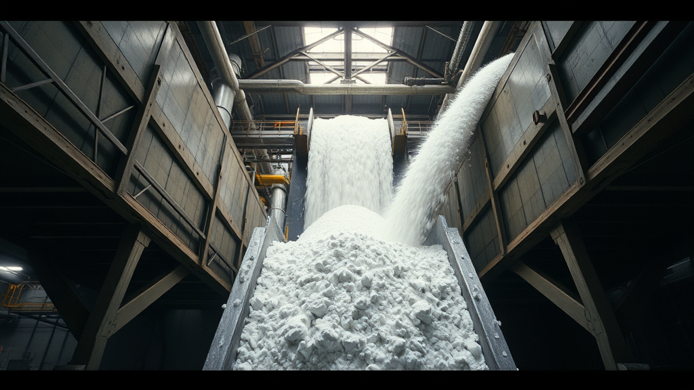

FLUX.1 Schnell (Q5 GGUF, local ComfyUI) · 6 visual universes × 2 seeds · 1024x576 · no typography (overlay comes later)

A documentary #1OK
moody but hands slightly malformed

A documentary #2STRONG
dramatic lighting, clear focal point, narrative
B conceptual #1STRONG
salt crystal, world-map shadow — the metaphor works

B conceptual #2OK
same idea, flatter centered composition

C surrealism #1STRONG
salt vial dwarfing a city — scale contrast works

C surrealism #2STRONG
shaker over cityscape, strong mood

D historical #1OK
poster feel, minor line imperfections
D historical #2WEAK
clunky framing, less resolved

E minimal #1STRONG
clean isolation, good texture

E minimal #2STRONG
excellent lighting and detail

F industrial #1OK
motion, but softer than ideal

F industrial #2STRONG
low-angle industrial scale, dramatic